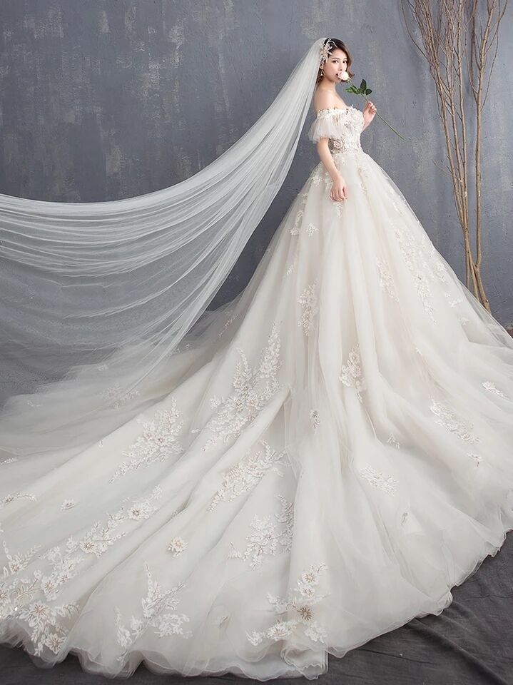
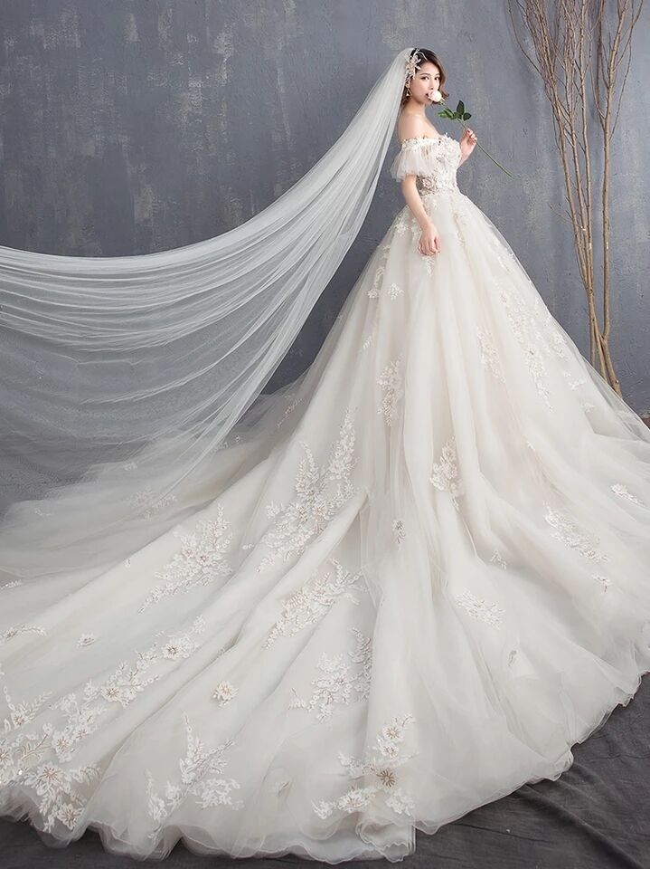
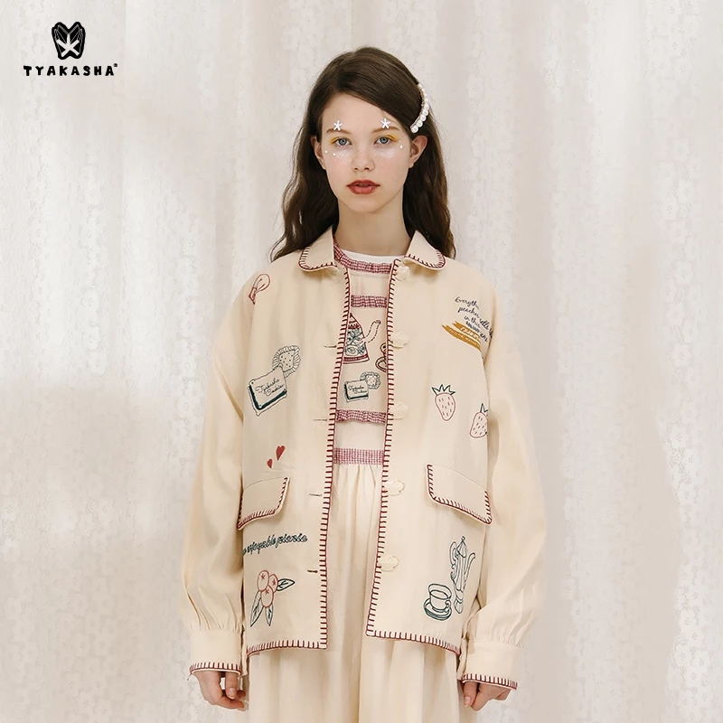
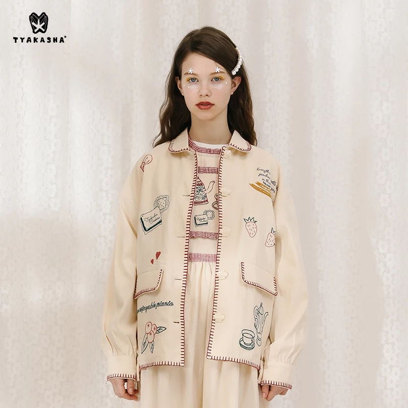
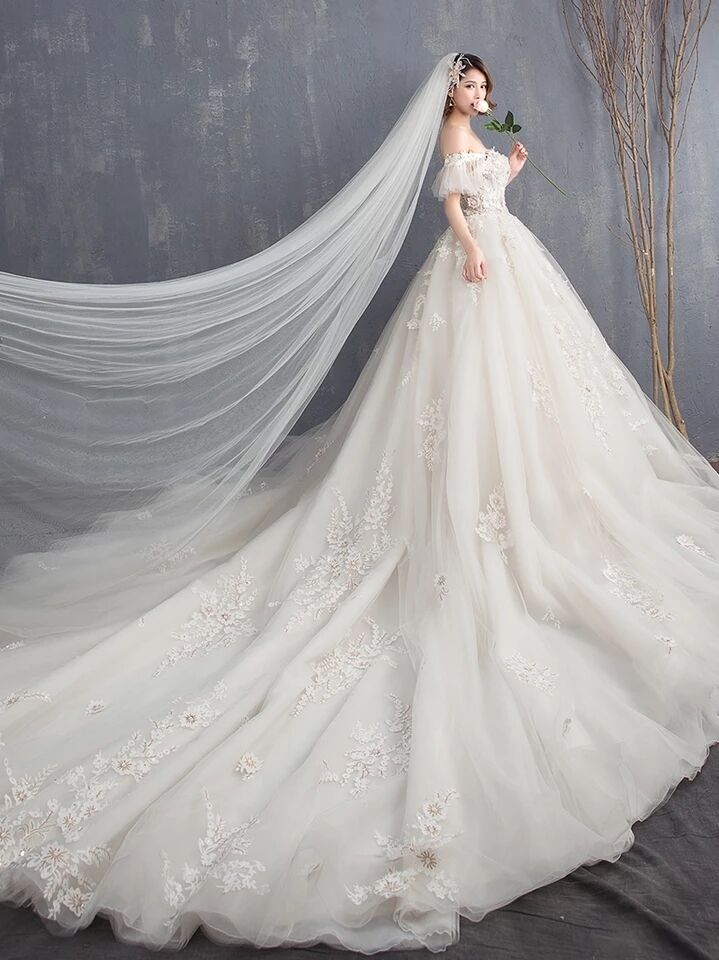
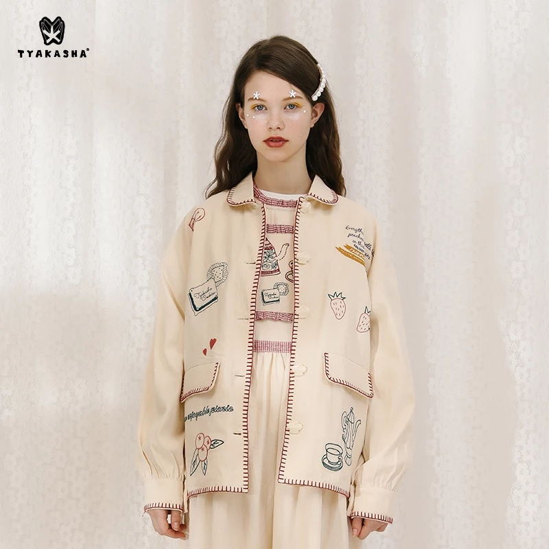

 

一、防晒衣
防晒衣防晒衣防晒衣防晒衣防晒衣防晒衣防晒衣防晒衣防晒衣
二、婚纱
婚纱婚纱婚纱婚纱婚纱婚纱婚纱婚纱婚纱婚纱婚纱婚纱婚纱婚纱
三、凉鞋
凉鞋凉鞋凉鞋凉鞋凉鞋凉鞋凉鞋凉鞋凉鞋凉鞋凉鞋凉鞋凉鞋凉鞋
四、网球鞋
网球鞋网球鞋网球鞋网球鞋网球鞋网球鞋网球鞋网球鞋网球鞋网球鞋
五、外套
外套外套外套外套外套外套外套外套外套外套外套外套外套外套
一、防晒衣
防晒衣防晒衣防晒衣防晒衣防晒衣防晒衣防晒衣防晒衣防晒衣


防晒衣防晒衣防晒衣防晒衣防晒衣防晒衣防晒衣防晒衣防晒衣
婚纱婚纱婚纱婚纱婚纱婚纱婚纱婚纱婚纱婚纱婚纱婚纱婚纱婚纱
凉鞋凉鞋凉鞋凉鞋凉鞋凉鞋凉鞋凉鞋凉鞋凉鞋凉鞋凉鞋凉鞋凉鞋
网球鞋网球鞋网球鞋网球鞋网球鞋网球鞋网球鞋网球鞋网球鞋网球鞋
外套外套外套外套外套外套外套外套外套外套外套外套外套外套
防晒衣防晒衣防晒衣防晒衣防晒衣防晒衣防晒衣防晒衣防晒衣